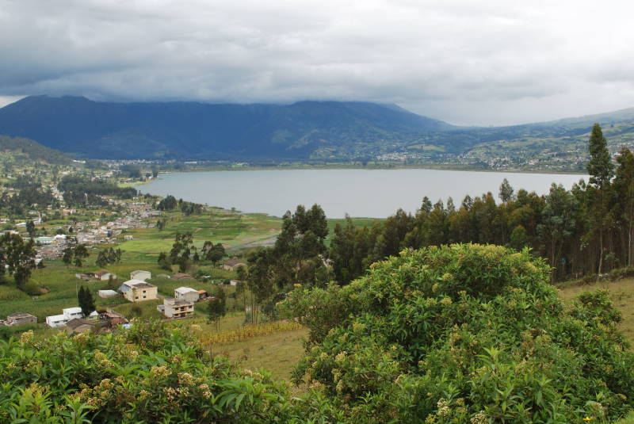
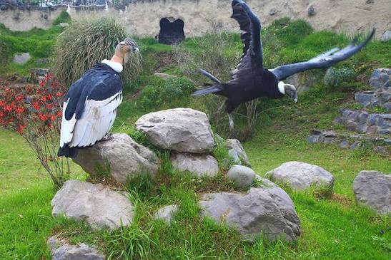
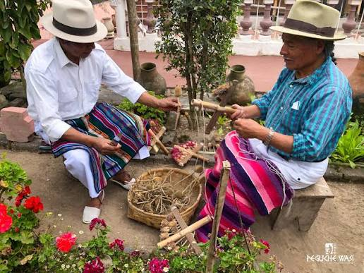

Destinos Turísticos
Conoce todos los lugares imperdibles que tenemos preparados para ti.

Mercado Centenario
Tradición viva en textiles y artesanías ancestrales.

Bosque Protector Peguche
Senderos ecológicos y biodiversidad andina pura.

Ruta del Lago San Pablo
Deportes acuáticos y gastronomía típica a la orilla del lago.

Parque Cóndor
Centro de rescate y conservación de aves rapaces andinas.

Mojanda y sus Lagunas
Aventura de alta montaña entre lagunas craterarias misteriosas.

Comunidades Indígenas
Turismo comunitario, vivencial y de intercambio cultural.